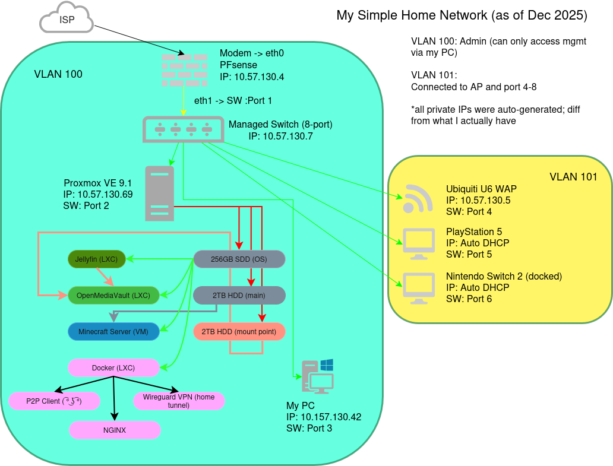
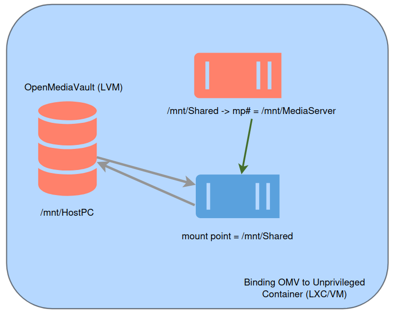

HomeLab Information
My HomeLab is very simple. I plan to add more into the future, such as upgrading the main rig to a more server machine than a desktop-workstation machine.

OpenMediaVault Storage Solution (temporary)
A shared storage was created in OpenMediaVault with Samba protocol enabled. The home machine has 2x2TB internal storage, not NAS. When the VM was created, both drives were binded.
Based on the example below, a filesystem was created on one of the drives (/mnt/HostPC), creating a disk and enabling it to be shared. HostPC can be accessed anywhere on Windows, Mac, or Linux using the IP address of OpenMediaVault and putting in credentials.
Once the drive is accessible via Samba, a mount point was created on the root of Proxmox to allow Jellyfin to communicate to it. Binding the HostPC to the /mnt/Shared to allow access by Jellyfin LXC.
Lastly, a mount point command is created to allow the Jellyfin's /mnt/Shared directory to connect to Proxmox root's /mnt/Shared directory, creating the connection.

VM/Container Configuration
- 1. Jellyfin (LXC)
- - I originally used Plex Media Server as my home media server, but after the subscription changes, I decided to move to Jellyfin. Jellyfin's UI might not be as pretty as Plex Media Servers, but it works and I don't have to rely on a subscription to enable hardware acceleration.
- 2. OpenMediaVault (LXC)
- - I do not have a NAS storage yet. I am thinking of UGREEN or Synology or whatever fits my budget, so for now, I am relying on software-based NAS.
- 3. Minecraft Server (VM)
- - For friends. It is under Xubuntu for lightweight use.
- 4. Docker (LXC)
-
- Some are easy to deploy in Docker, aka most of the instructions I found primarily ran on Docker well, compared to straight Proxmox LXC. Examples include:
- P2P Client, if you know what I mean. Can't say much, but the logo of the software is blue.
- NGINX Web Server. I use this for web hosting my files locally to be accessed by apps, such as console homebrew.
- Wireguard VPN. I use this a lot to access my stuff remotely. Created a private key.
- AgentDVR. It is not created on the diagram, but this was recently installed for outdoor and indoor security camera DVR. I do not want to pay for a subscription.